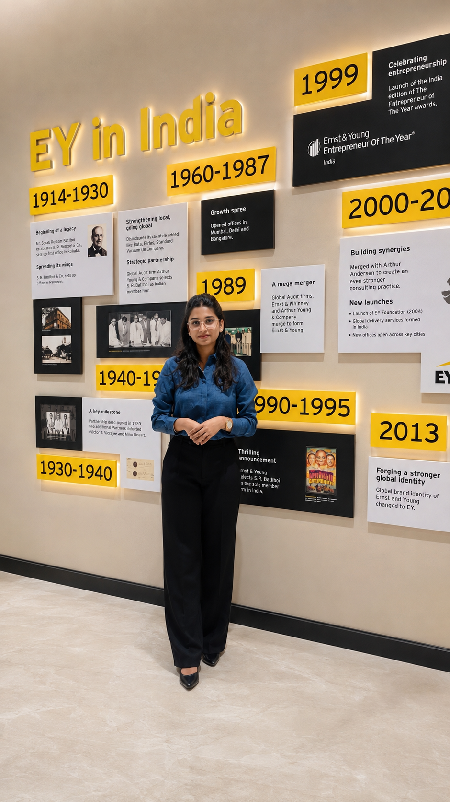
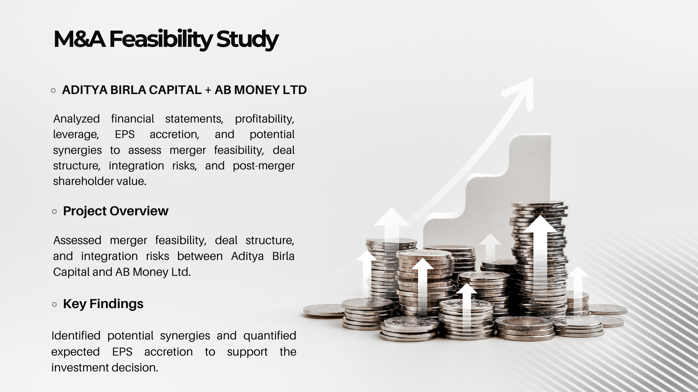
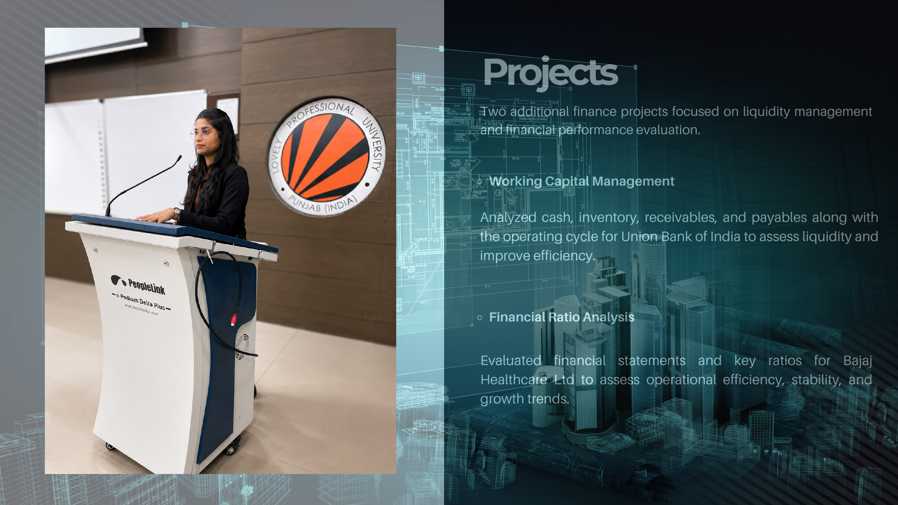
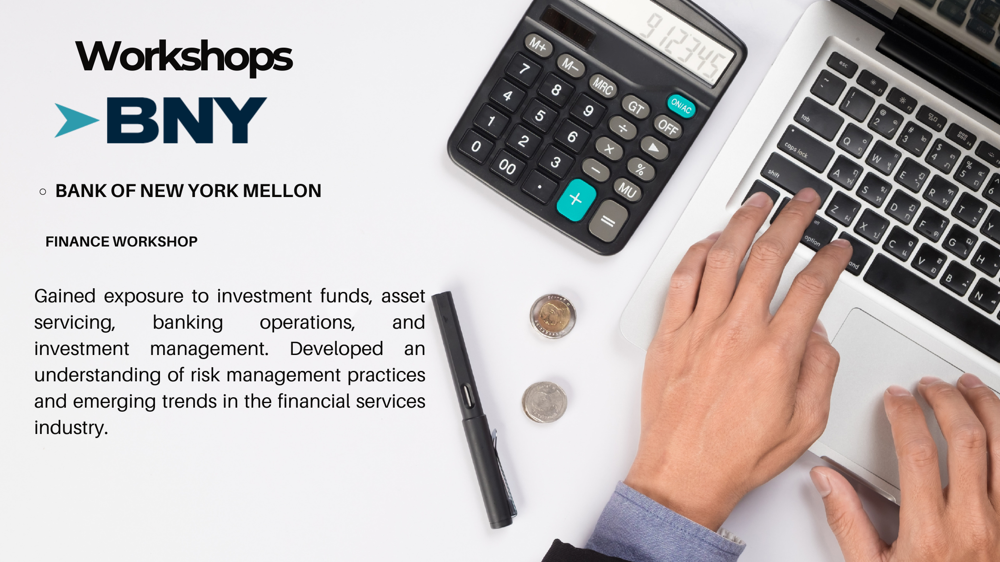
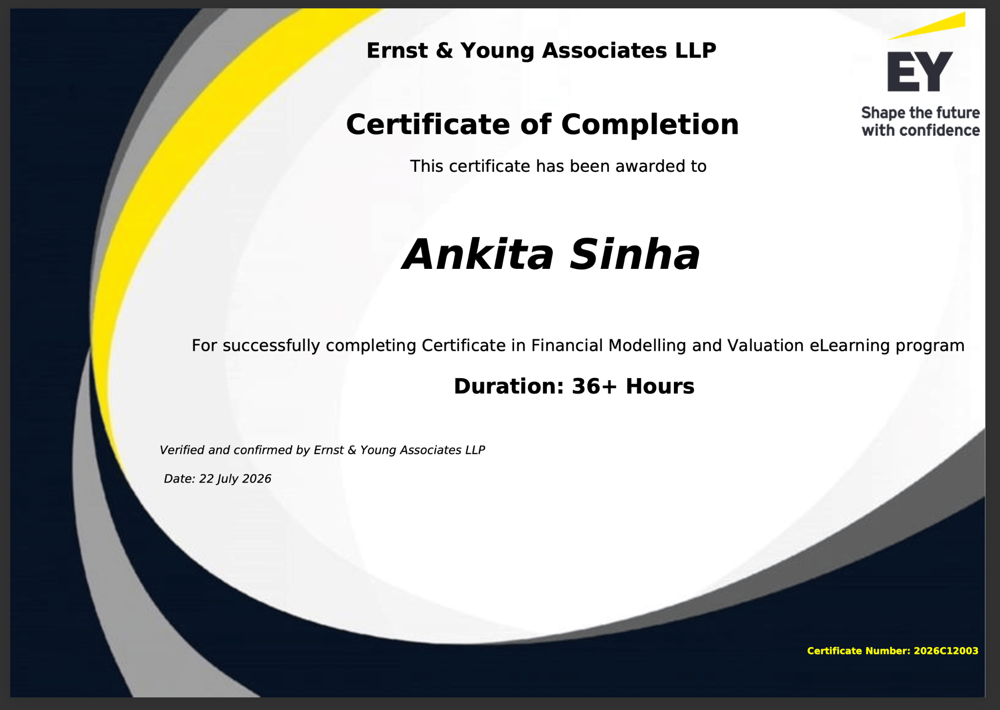
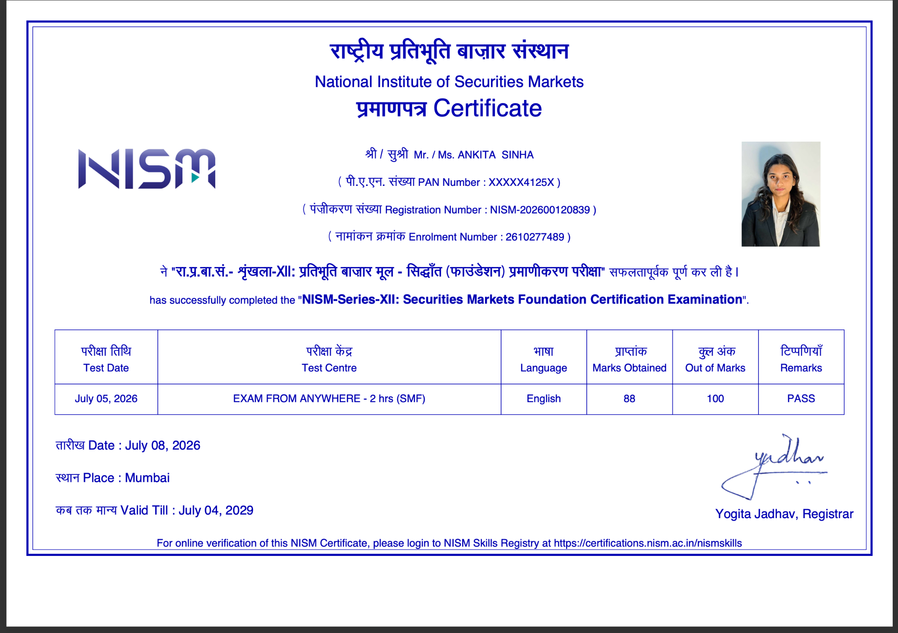
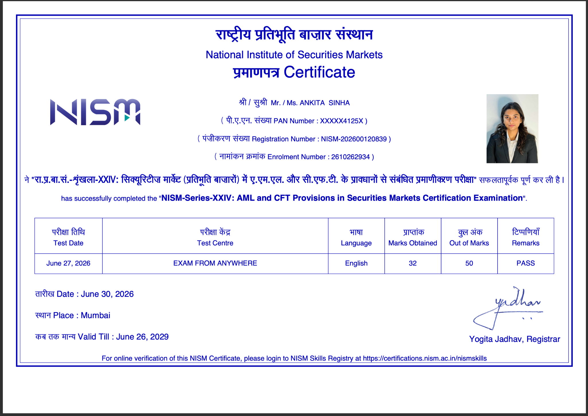
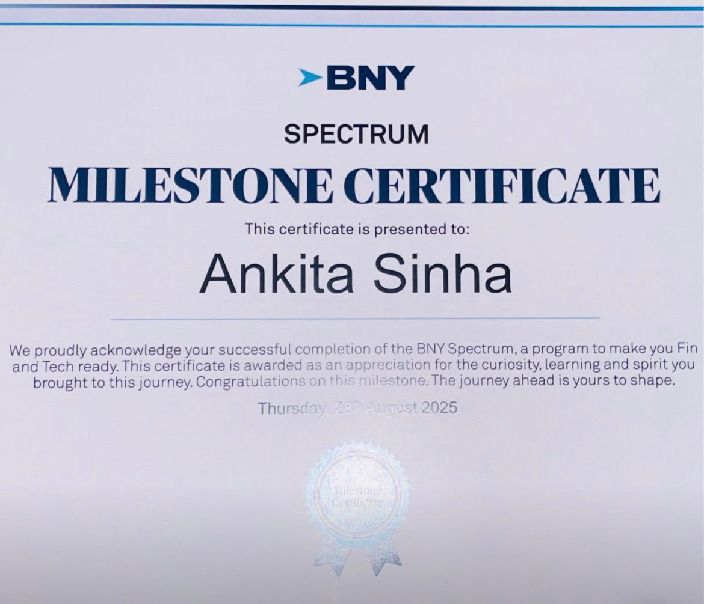

I enjoy turning financial information into meaningful insights through financial statement analysis, valuation, research and data-driven decision making.

Finance & Operations
Investment & Financial Analysis
An enthusiastic MBA student specializing in Finance and Operations at Lovely Professional University, with practical exposure across financial analysis, valuation, accounting advisory, banking and operations.
My experience includes EY's Financial Accounting Advisory Services internship, working-capital analysis, customer relationship management and operational analytics. I am particularly interested in corporate finance, accounting advisory, valuation, investment research and business strategy.
A strong academic foundation in commerce, finance and operations.
Lovely Professional University, Phagwara, Punjab
CGPA: 8.78
Aryabhatta Knowledge University, Patna, Bihar
CGPA: 8.95
St. Karen's Secondary School, Patna, Bihar
Percentage: 77.2%
A combination of financial, technical and interpersonal capabilities developed through academics and practical experience.
Professional exposure across operations, HR, financial accounting advisory, working capital and banking.
Hands-on projects connecting financial concepts with real-world business decisions.

Analyzed financial statements, profitability, leverage, EPS accretion and potential synergies to assess merger feasibility, deal structure, integration risks and shareholder value.

Evaluated profitability, liquidity, solvency, efficiency and leverage ratios to assess financial health, operational efficiency and long-term growth potential.

Gained exposure to private equity, hedge funds, REITs, mutual funds, asset servicing, portfolio management and investment banking; presented analysis of the JPMorgan Large Cap Growth Fund.
Analyzed inventory, receivables, payables, cash management, cash conversion cycle and operating cycle to identify liquidity and efficiency opportunities.
Click any certificate to open the full document or image in a new tab.

Certificate in Financial Modelling and Valuation eLearning program, 36+ hours.
View Certificate ↗

AML and CFT Provisions in Securities Markets Certification.
View Certificate ↗Completed the Varsity Certified program and scored 79/100.
Open Certificate ↗NISM certificate of participation awarded for successfully completing the test.
Open Certificate ↗
Recognition for successful completion of the BNY Spectrum program.
View Certificate ↗Open the complete CV with education, experience, internships, projects, certifications and skills.
Open CV ↗Open to conversations around finance, financial analysis, valuation, investment research and professional opportunities.